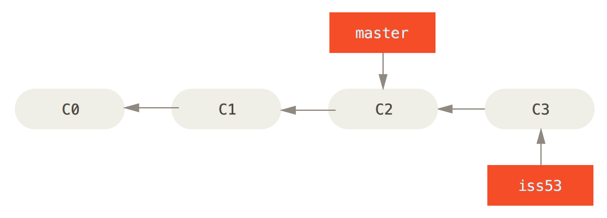
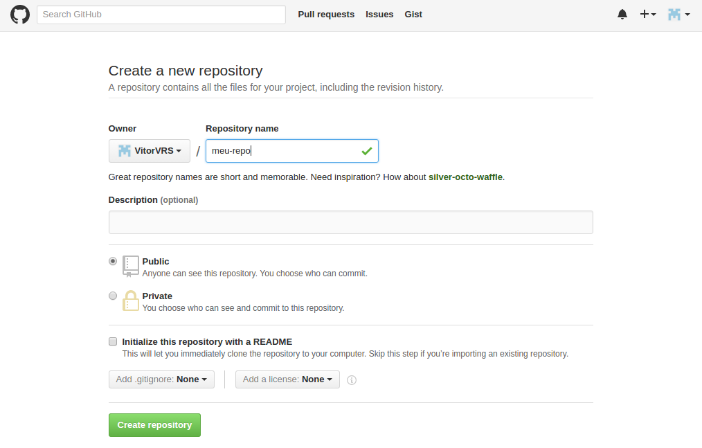

Aprenda git!
Entendendo o básico
Agenda
- Controle de Versão
- História
- O básico do
git - O que é um commit?
- Branching
- Merging Básico
- GitHub
O que é Controle de Versão?
Controle de Versão Centralizado

Controle de Versão Distribuído

História
Há milhares de anos...


O que nós precisamos?
- Velocidade
- Design simples
- Suporte à desenolvimento não linear
- Ser totalmente distribuído
- Ser capaz de controlar projetos de grande porte
Vamos começar!
Criando um repositório
git init
As três seções
Repository
- Onde Git guarda os metadados e o banco de objetos do projeto
- Diretório .git
- Também conhecido como HEAD
Working Directory
- Arquivos atuais
- Retirados do Repository e colocados no disco
Staging Area
- Guarda todas as alterações que vão ir para o próximo commit
- Também conhecido como Index
As três seções

O fluxo de trabalho básico
Quem é você?
git config --global user.name VitorVRS
git config --global user.email vitor.vrs@gmail.com
Você só precisa fazer isso uma vez.
git status
Mostra o estado do seu working directory
Ele é seu melhor amigo!
Nosso repositório está vazio :(
Vamos adicionar um arquivo ao working directory!
A wild untracked file appears...
Proposta de mudança
git add filename
ou
git add *
O arquivo agora será "rastreado" e será adicionado ao Staging Area
Realizando um commit
git commit
Junta todos os arquivos do Staging Area e guarda dentro do Repository
Ciclo de vida de um arquivo

O que é, exatamente, um commit?
Um snapsht
Snapshots, não as diferenças
E é isso que faz o git ser f*da!
General VCS

Git

O commit
É um objeto!
- Um ponteiro ao snapshot do Staging Area
- Nome do autor e e-mail
- A mensagem do commit
- Ponteiro apontando para o commit pai/ancestral
A verdadeira cara de um commit

Um árvore de commits
O que são estes 98ca9 92ec2?
Um identificador
Tudo no Git é garantido sua unicidade com um hash SHA-1
Um hash SHA-1 é uma string composta de 40 caracteres
24b9da6552252987aa493b52f8696cd6d3b00373
Existe um total de 2160 hashes
ou 1.4615016373309029182036848327163x1048

Branching
O conceito
Branching é como você diverge da linha principal de desenvolvimento e continua a trabalhar sem ter que alterar a linha principal
No Git
Um branch é apenas um ponteiro à um commit
O branch master
- O branch default
- Não tem nada de especial
Criando um branch
git branch branch-name
git branch testing

Alternando entre branches
git checkout branch-name
git checkout testing

E se você commitar agora?
git commit -a -m "testing commit"

Voltando ao master
git checkout master

Trabalhando no master denovo
git commit -a -m "master commit"
Branches são "econômicos"!
São apenas um arquivo de 40 caracteres (um SHA-1 de um commit)
Usem e abusem deles!
Merging Básico
Um exemplo
Você está trabalhando numa aplicação web que é usada por milhares de usuários.
Hoje, você decide trabalhar numa issue #53.
git checkout -b iss53
Você cria um commit com a correção parcial.
git commit -a -m "Fix part of issue 53"
O repositório
Boom!
Seu chefe liga dizendo que há um problema afetando todos os usuários e você precisa resolver imediatamente.
Mas eu estou trabalhando na issue #53 e já alterei um monte de arquivos. Eu não quero eles juntos com a nova correção.
Não se preocupe! Com Git é barbada!
git checkout master
Vamo corrigir!
Você cria um novo branch e corrige o problema.
git checkout -b hotfix
git commit -a -m "Correção da página inicial"
O repositório atual

A correção está pronta! Coloque em produção!
Após alguns testes, você quer aplicar a correção ao branch master, no qual seria "produção".
$ git checkout master
$ git merge hotfix
Updating f42c576..3a0874c
Fast-forward
index.html | 2 ++
1 file changed, 2 insertions(+)
O merge fast-forward

Vamos voltar à issue #53
Mas antes vamos apagar o branch hotfix, agora que não precisamos mais.
$ git branch -d hotfix
Deleted branch hotfix (3a0874c)
Finalizando a issue #53
Você volta a trabalhar na issue #53
git checkout iss53
git commit -a -m "Corrigido o resto do bug"
O repositório

É hora do... merge!
Você decide que a issue #53 está corrigida e pronta para se juntar ao branch master.
$ git checkout master
Switched to branch 'master'
$ git merge iss53
Merge made by the 'recursive' strategy.
index.html | 50 +
1 file changed, 50 insertions(+)
É um pouco diferente do outro merge...
Git está fazendo a mão por trás!
Um commit de merge aparece!

Em 5 minutos!
O que é GitHub?
O maior servidor de repositórios Git!
Ponto central de colaboração de milhões de desenvolvedores e projetos.
Muitas linguagens... @GitHut.info
Muitos utilitários: Controle de Issues, Revisão de código, wikis, integrações e muito mais...
GitHub Enterprise
Criando um repositório
Clonando um repositório
git clone https://github.com/VitorVRS/vrsflix
Mostrando seu repositório remoto
git remote -v
Lendo os dados do repositório remoto
git fetch origin
Isso apenas baixa os dados do repositório e não vai modificar o seu Working Directory
git merge origin branch-name
git pull
Um combinação de git fetch e git merge
Enviando dados ao repositório remoto
git push origin branch-name